1 10
문제행동별지도방안
강사 : 김경미
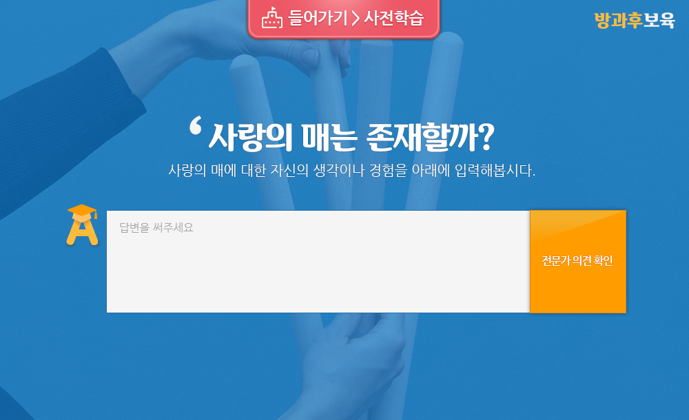


학습하기
문제행동별 지도방안
( 1부 이론 )
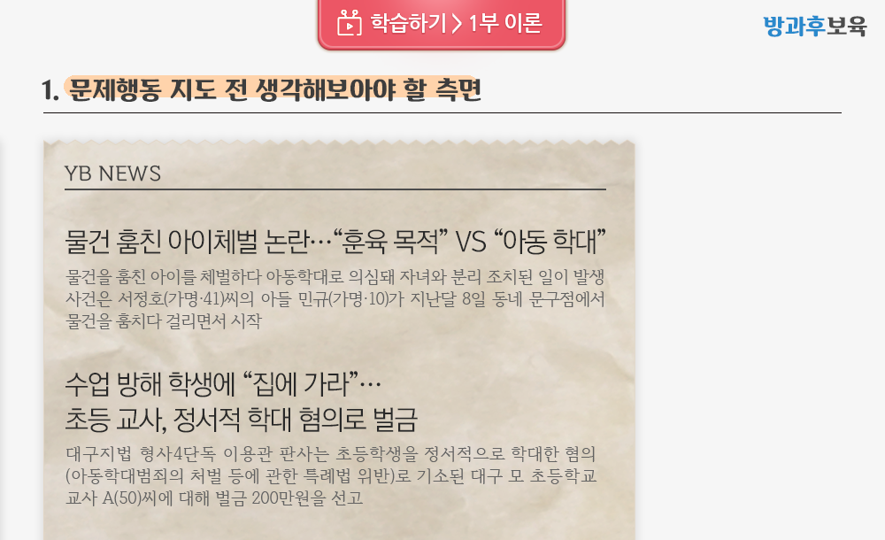
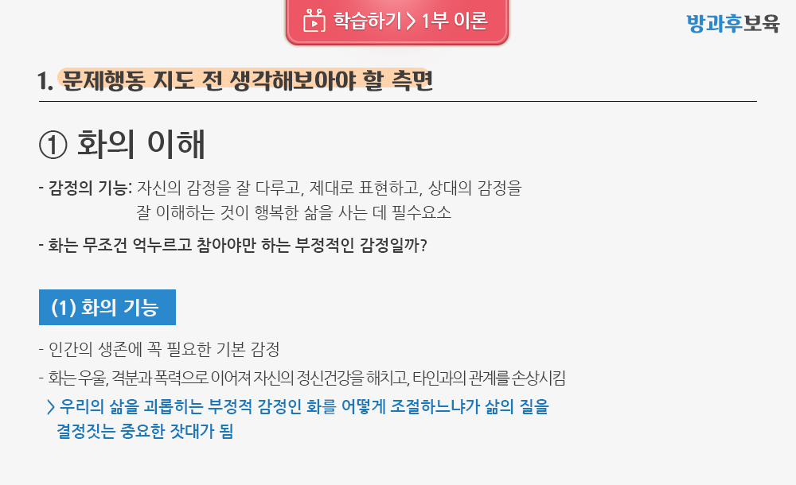
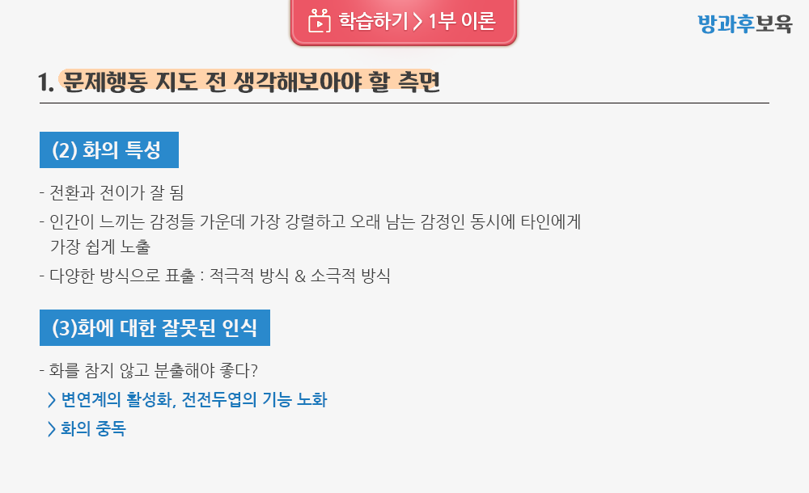
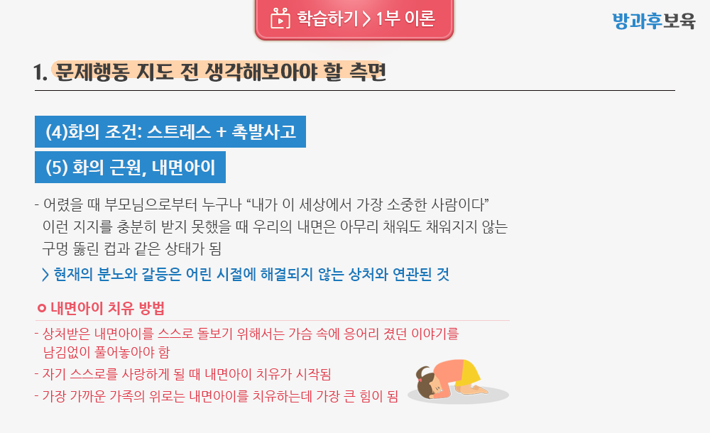

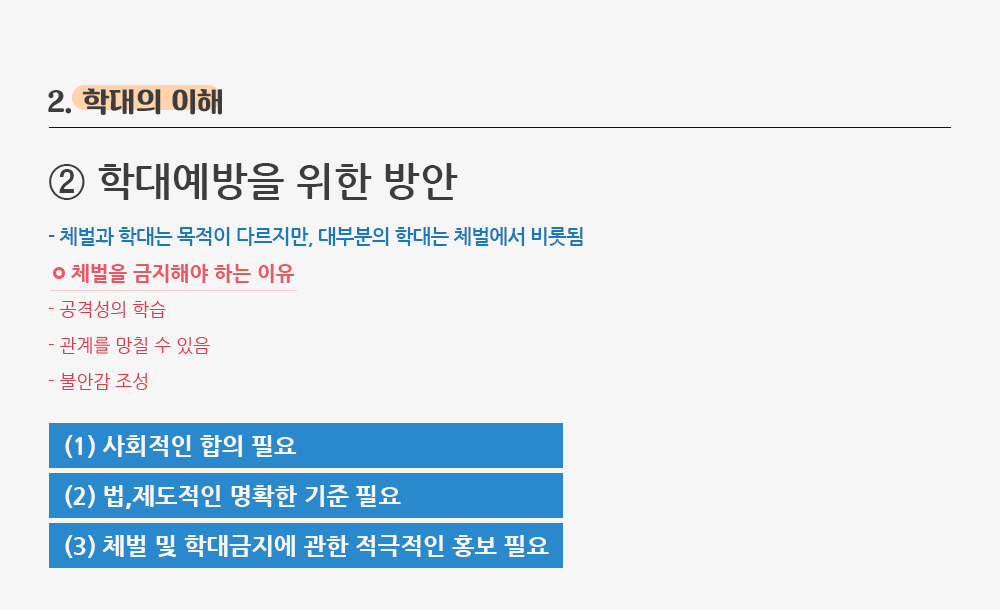
학습하기
문제행동별 지도방안
( 2부 적용 )
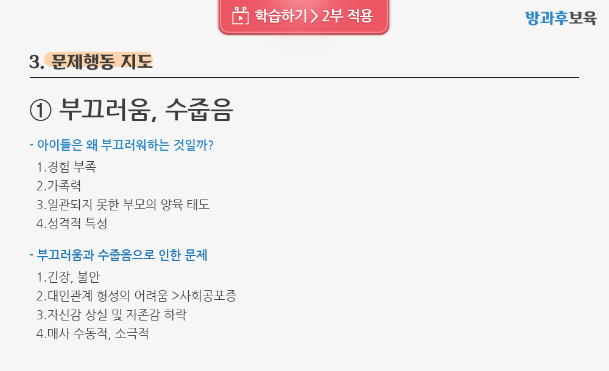
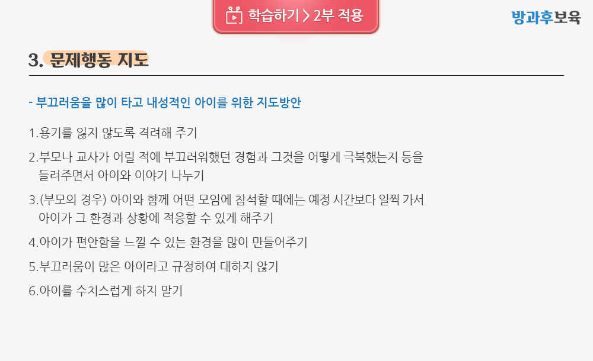
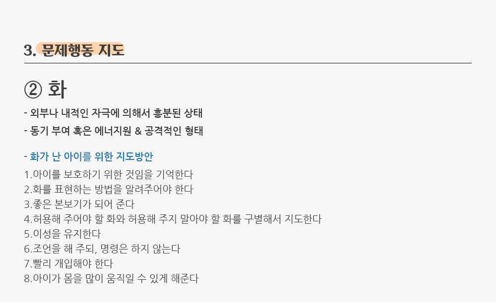
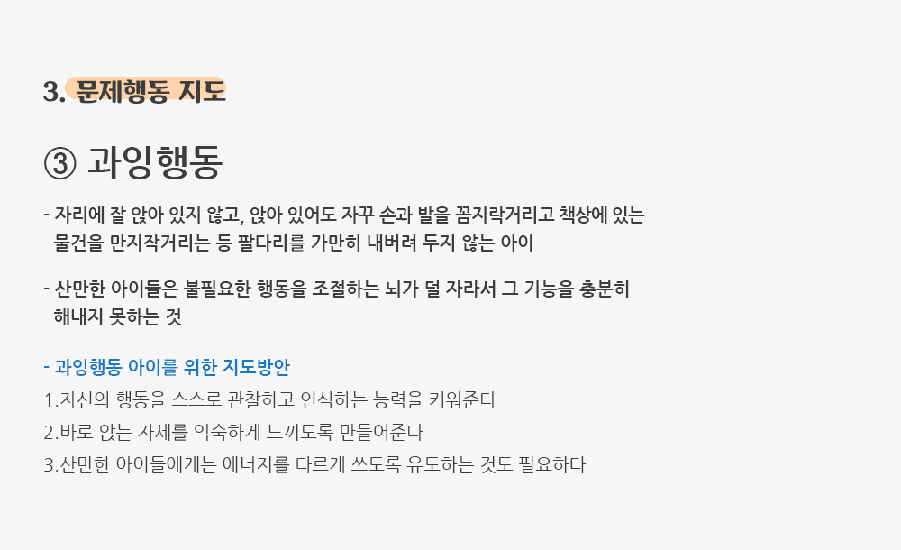
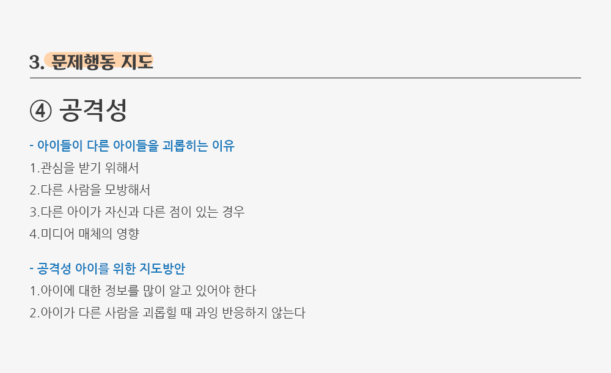
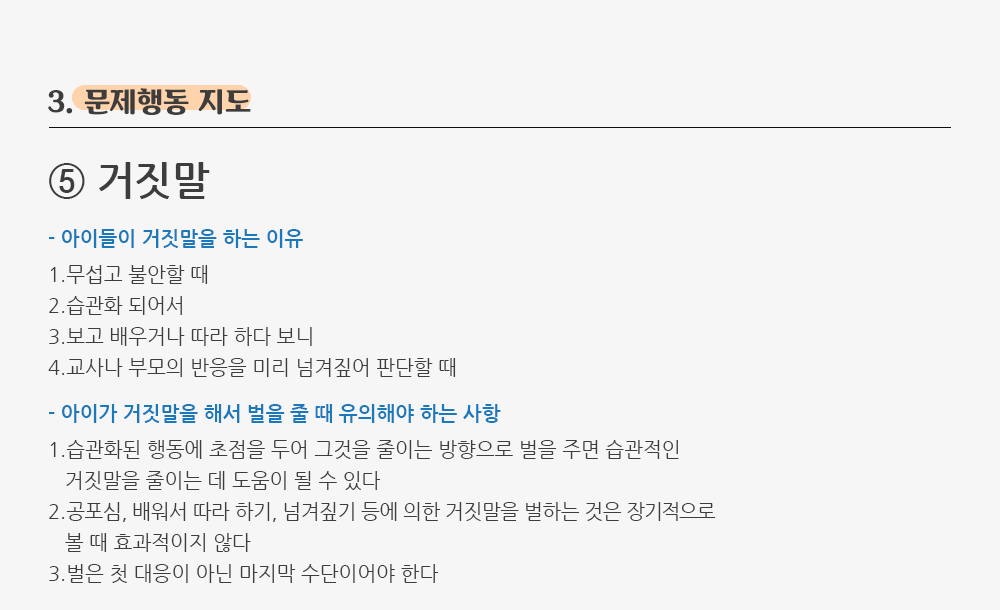
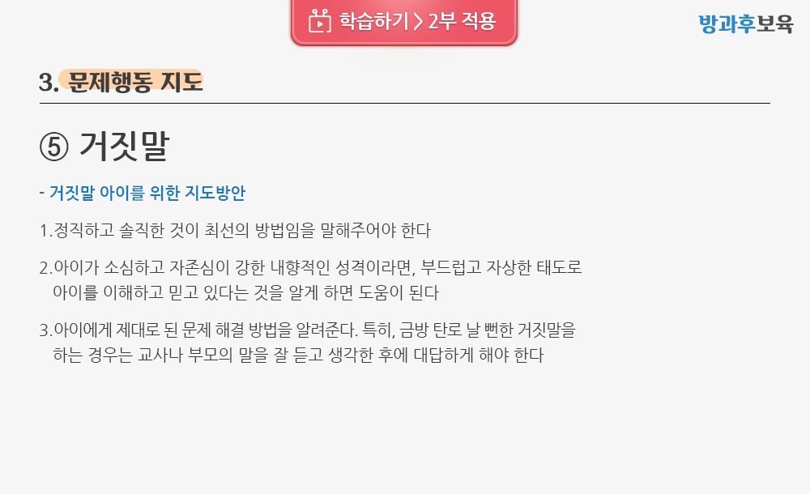
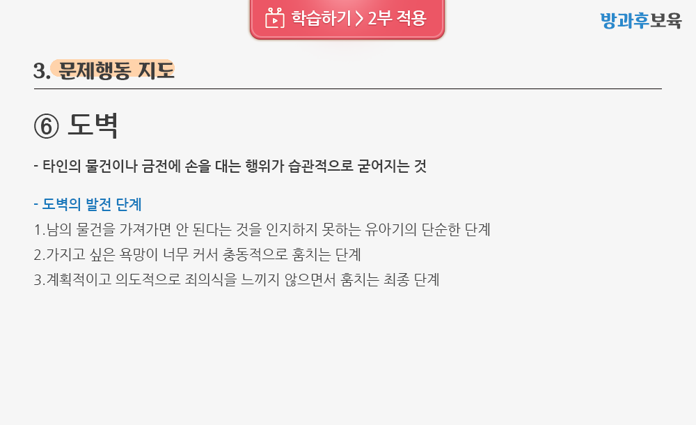
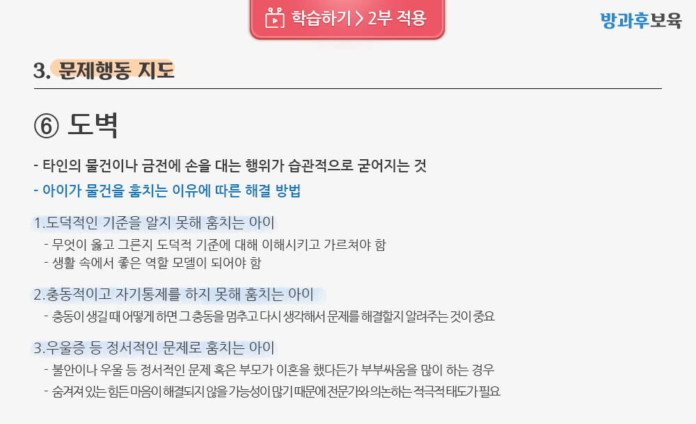
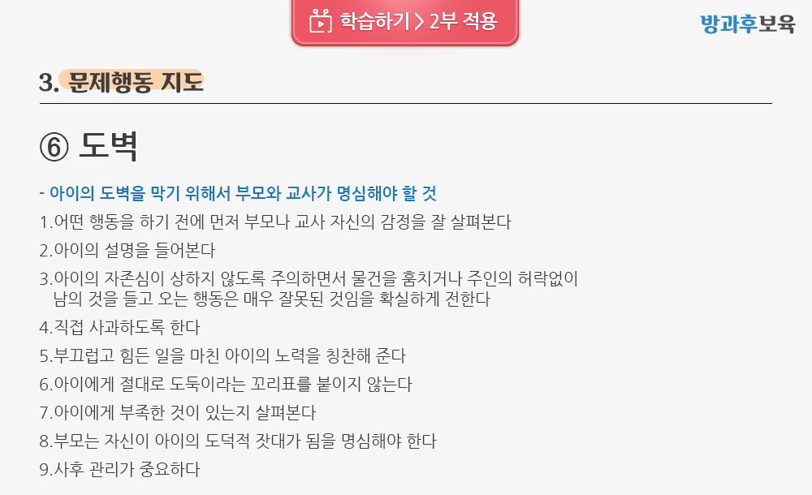
정리 QUIZ
Q1다음 중 화에 대한 설명으로 바르지 않은 것은?
정답 : ①
화의 분출로 인한 해소는 일시적일이다. 분노에 관계되는 변연계가 자주 활성화되면 이를 조절하는
전전두엽의 기능이 노화되어 제 역할을 못하게 되고 결국 작은 자극에도 폭발하게 된다.
정리 QUIZ
Q2체벌과 학대에 대한 설명으로 바르지 않은 것은?
정답 : ③
대부분의 학대가 체벌에서 시작될 수 있기 때문에
훈육이라는 미명하에 행해지는 체벌도 금지되어야 할 것이다.
정리 QUIZ
Q3화를 잘 표현하는 방법으로 옳지 않은 것은?
정답 : ②
부끄러움을 많이 타고 내성적인 아이를 위한 지도방안으로는
용기를 잃지 않도록 격려해 주는 것이 적합하다.
보충심화학습
학습 후 보충 심화 학습자료를 확인해보세요.

문제행동별 지도방안
부모와의상담
교수소개
김경미 교수님
- 경력 및 학력
- 현) 고려대학교 보육학개론 교수
- 전) 고려대학교 가정교육 교수
- 전) 성균관대학교 대학원 아동문제와 보호 강의아교수법 교수
- 고려대학교 대학원 가정학과 아동학 전공 박사졸업